Why Homebrew?
- Fun hobby
- Community
- C'mon, BEER!
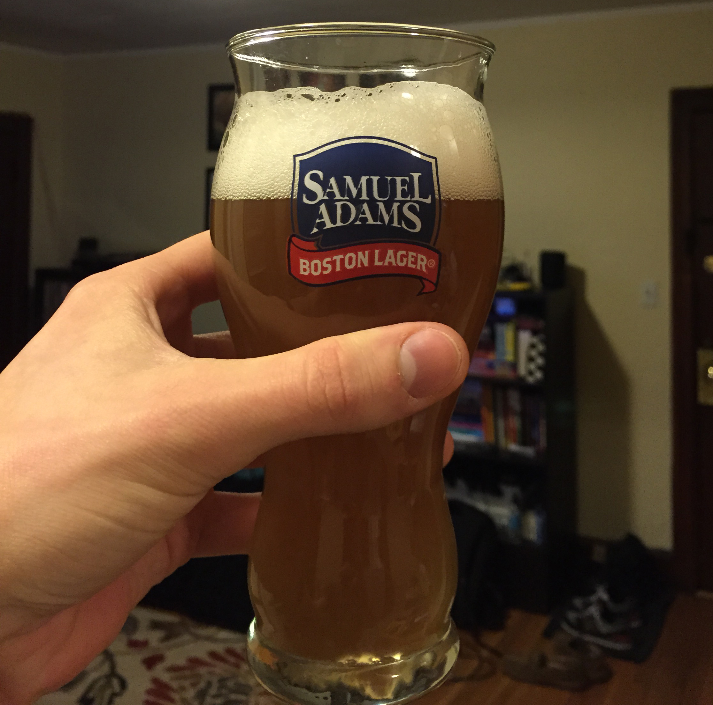
Other Stuff
- Specialty grains, oats, wheat, etc
- Spices: cinammon, corriander, pepper
- Fruit: cherry, peach, orange peel
- Coffee, chocolate... the list goes on
- (Also love)
So... How Do You Make It?
Step 1: Gather Your Supplies
Tools
- Carboy (fermenter)
- Racking cane + tubing
- Mesh filter + funnel
- Pots, pans, cups
- Bottles + caps
- Sanitizer
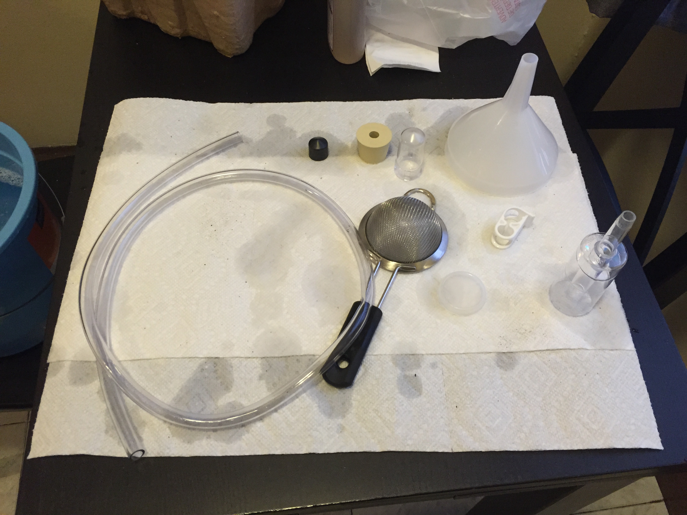
Step 2: Steep the Grains
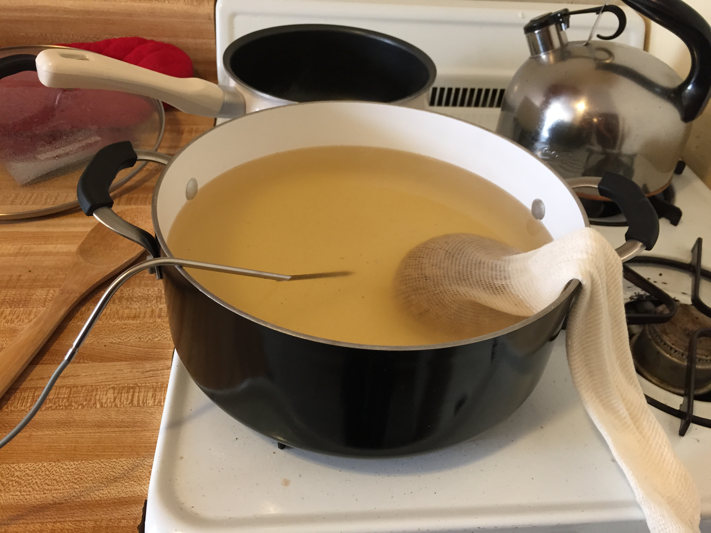
Step 3: Add the Malt Extract
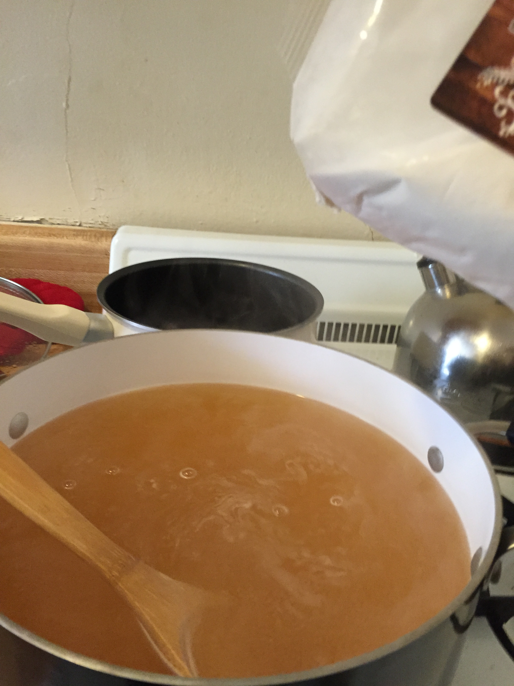
Step 4: Boil the "Wort"
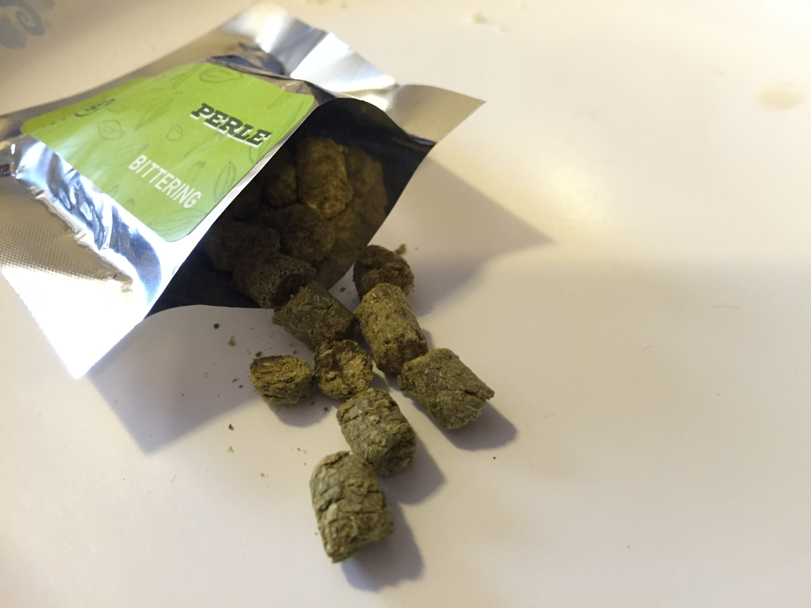
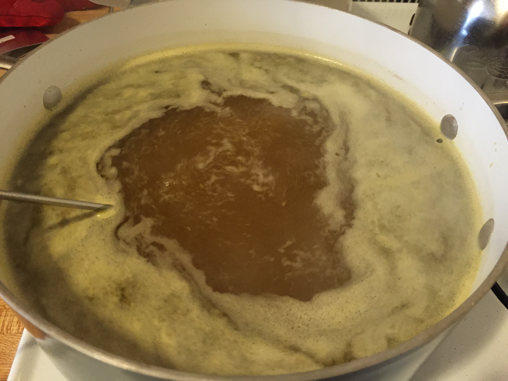
Step 5: Cool and Filter
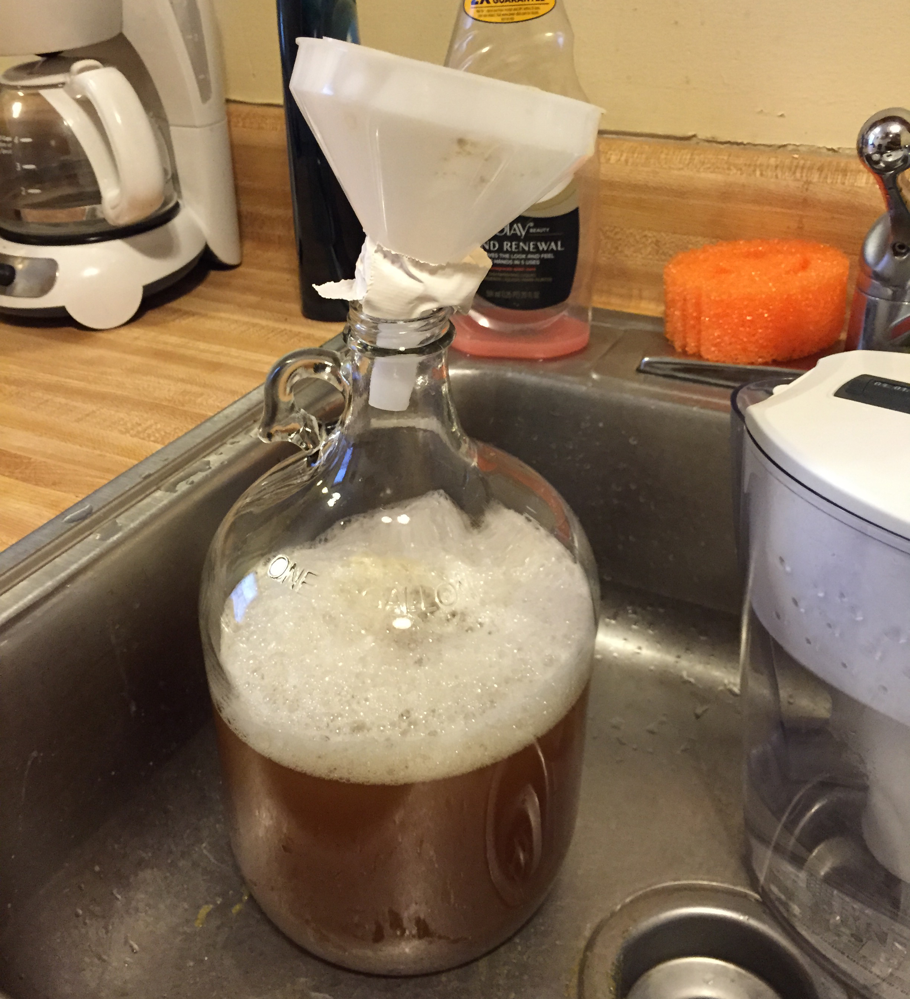
Step 6: "Pitch" the Yeast
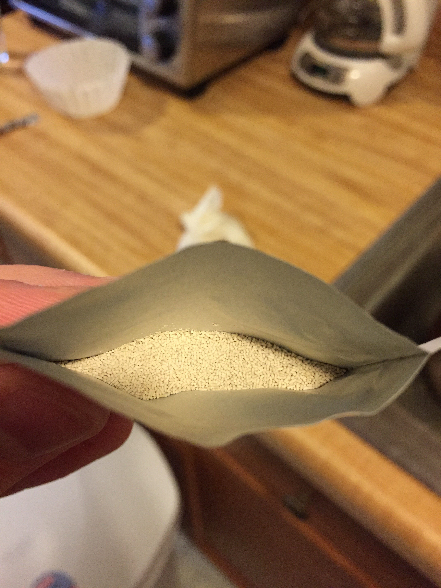
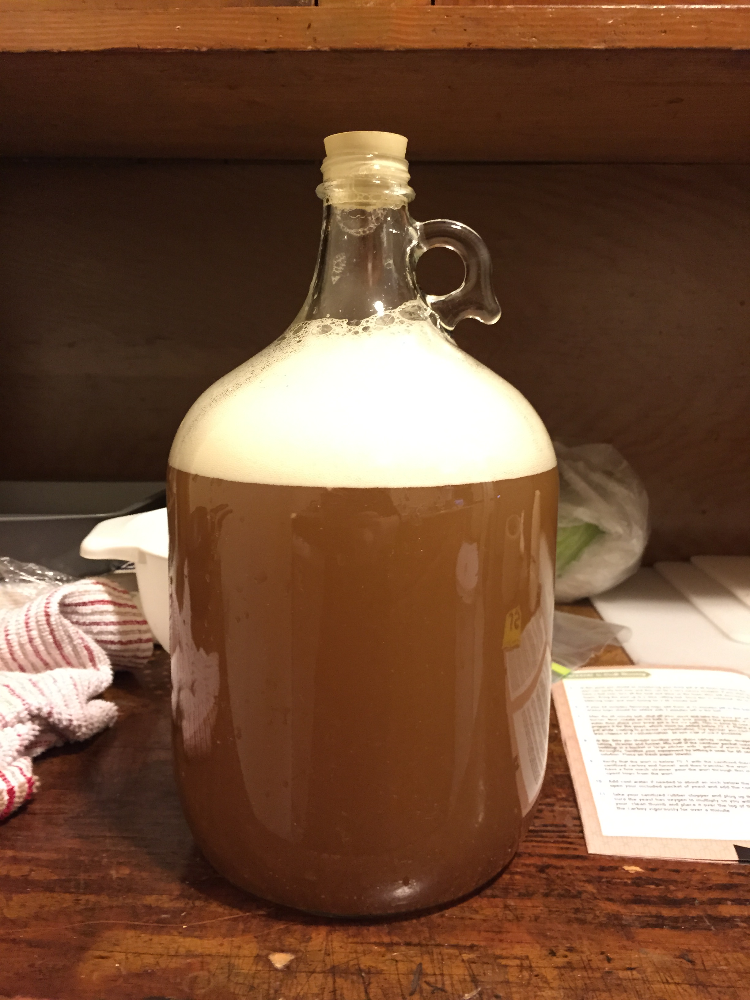
Step 7: Fermentation
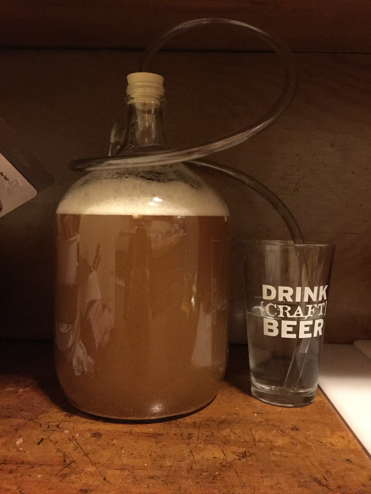
Step 8: Bottling Prep
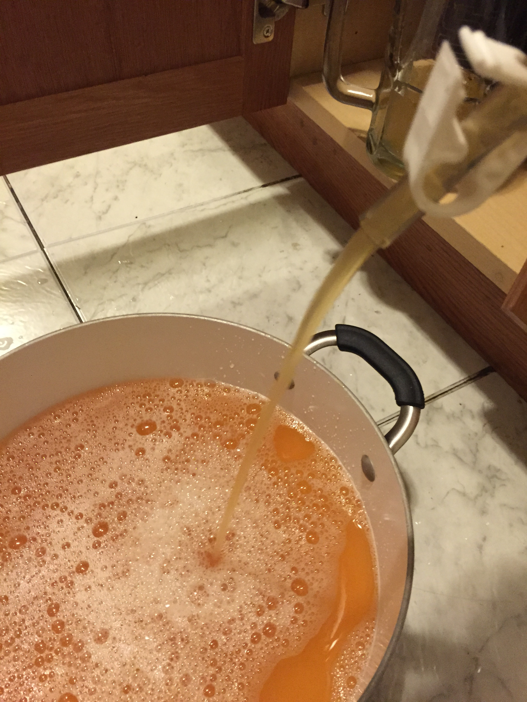
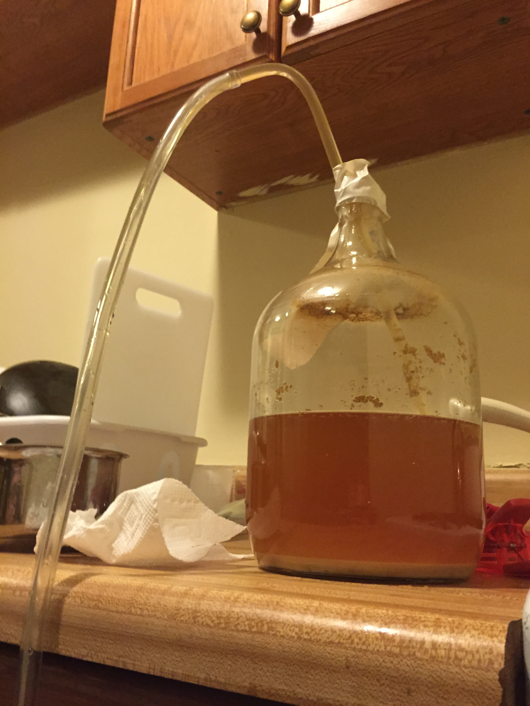
Step 9: Bottle the Beer
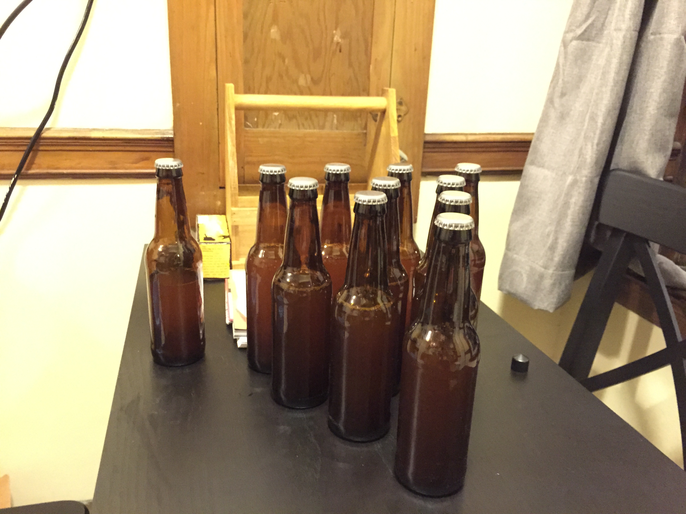
So... How Do I Get Started?